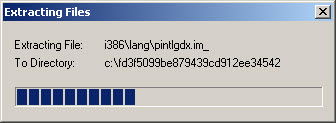
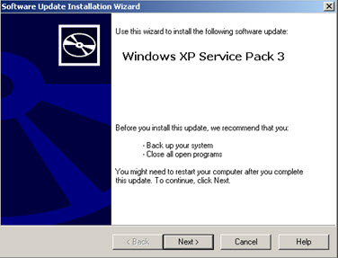
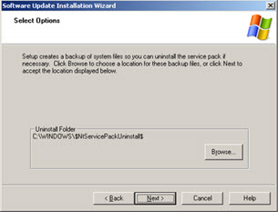
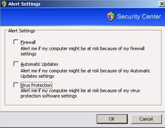
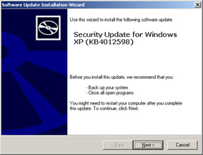

Install Microsoft Windows MS17-010 Security Patch
This procedure describes how to install Microsoft Windows MS17-010 security patch on the Access console PC.
WannaCry ransomware first appeared on 12-May-2017 and has attacked computers globally, exploiting vulnerabilities in Microsoft operating systems, encrypting data and demanding ransom payments to decrypt the data. Security patch MS17-010 was developed by Microsoft to prevent the spread of the ransomware from system to system. The patch does not prevent the WannaCry ransomware from infecting a system, only the spread from one system to another. Perform this procedure if the customer requests the MS17-010 security patch for their Access 2 instrument.
-
If this is a Black Front SFF PC, install Windows XP Service Pack 3. For all other PC models, proceed to the next step.
- Press the Windows key and open Windows Explorer.
-
Navigate to the USB flash drive with the Windows XP Service Pack 3 file on it and double click to extract it.

-
Select
Next on the Software Update Installation Wizard window.

-
Select
I agree
to the License Agreement window and press
Next.

-
Select
Next in the Select Options window to write the backup files to the default folder.

-
Select
Finish when prompted. the PC will restart automatically.

- If the user interface launches, press [Alt] + [F4] and enter the password Access2Support to exit the user interface.
-
Select
Change the way Security Center alerts me on the Windows Security Center window that is displayed.

-
Uncheck all 3 settings (firewall, automatic updates, and virus protection) and select
OK.

- Close the Windows Security Center window.
-
Load the MS17-010 security patch for all PC models (black front SFF, silver front SFF, and mini Windows 8
-
Windows XP PCs
- Double click on the MS17-010 Windows Patch file that was downloaded to the flash drive.
- Select
Nextto the "Software Update Installation Wizard" window.

- Select
I Agree to the to the "License Agreement" window and select
Next.

- Select
Finish
at the "Installation complete" window to restart the PC.
-
Windows XP PCs